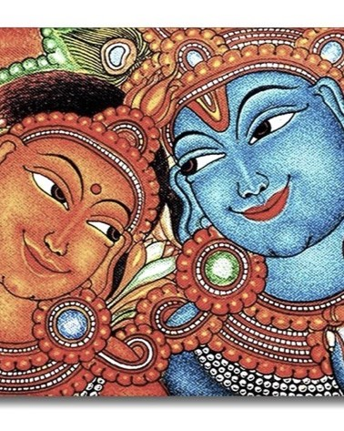

2. Kerala Mural

Being one of the vibrant forms of art, Kerala mural paintings are one of the world’s most famous frescos, that have deep spiritual roots depicting themes of Hindu mythology, epics, and the classic frolics of Krishna as well as the mystic forms of Siva and Shakti.This traditional art style dates to the 7th and 8th centuries AD. Characterized by bold strokes, and vivid colors, Kerala mural paintings are mainly captured through Ochre-red, yellow-ochre, bluish-green, white, and pure colors.